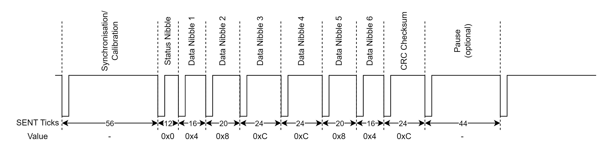
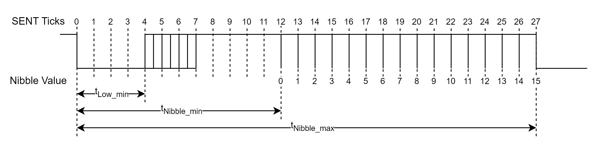
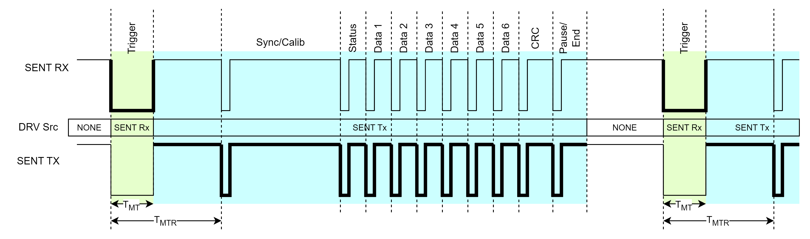
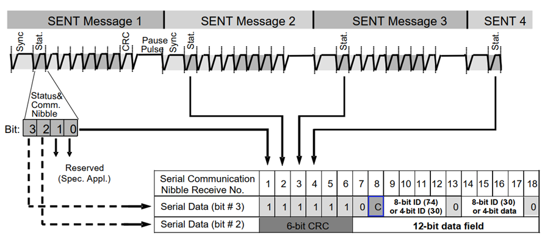
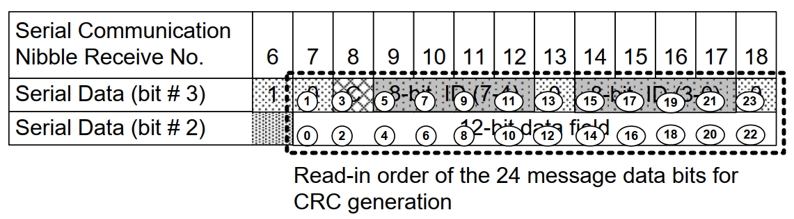

SENT Usage Notes — Usage information about the protocol and the code module
SENT is a unidirectional communication standard where data from a sensor is consecutively transmitted, without any intervention from the data receiving device. A new transmission starts immediately after the previous transmission ends (the trailing falling edge of the SENT CRC nibble is also the leading falling edge of the next Synchronization/Calibration pulse).
One transmission consists of a series of pulses, where the time between consecutive falling edges defines the 4-bit data nibble transmitted. The 4-bit data nibble represents values 0 to 15. A SENT communication unit of time (tick) can be in the range 3 µs to 90 µs. The maximum clock variation allowed for the sensor is ±20 % from the nominal tick time.
The transmission sequence consists of the following pulses:
Calibration/Synchronization pulse (56 tick times)
4-bit Status nibble pulse (12 to 27 tick times)
A sequence of two to six 4-bit Data nibble pulses (12 to 27 tick times each)
4-bit Checksum nibble pulse (12 to 27 tick times)
One optional pause pulse (12 to 768 tick times)

The SENT specification allows a ±20 % clock deviation from the nominal unit time, the Synchronization/Calibration pulse provides information on the current transmitter tick period. The time between the falling edges of the Synchronization/Calibration pulse defines 56 ticks. The SENT RX can calculate the current unit time period of the sensor from the pulse width and can therefore resynchronize on each start of a frame.
The Status nibble contains 4-bit status information on the sensor and it is also used to transmit enhanced serial messages (see below for more information). The width of the Status nibble pulse depends on the nibble value.
A single data nibble pulse carries 4-bit data. A maximum of 6 data nibbles can be transmitted in one SENT transmission. The total number of data nibbles depends on the protocol used by the sensor. The width of the data nibble pulse depends on the nibble value. The next figure depicts the format of the data nibble pulse. The pulse starts with the falling edge and remains low for at least four ticks. The remainder of the pulse width is driven high. The total data pulse width in the number of unit times is defined by the following equation: Data Nibble Pulse Width = 12+Nibble Value

The checksum nibble contains a 4-bit CRC value. The checksum is calculated using a x4+x3+x2+1 polynomial with the seed value of 5 (0b0101) and the reset value of 3 (0b0011).
For older devices (2008 and earlier), the legacy CRC generation was used where all but the last data nibbles are calculated through the CRC polynomial and the last data nibble is only bitwise XOR operated with the CRC result of the previous data nibbles.
Newer devices use the recommended CRC generation where all data nibbles are calculated through the CRC polynom.
The SPC protocol enhances the SENT protocol by introducing a half-duplex synchronous communication. To initiate a transmission, the receiver device generates a Trigger pulse (green part in in the next Figure) by driving the communication line LOW for a defined amount of time (tMT). The transmitter device measures the pulse width and only responds if the pulse width is within defined limits (see Master Pulse Requirements).
When the transmitter responds, it starts driving the line HIGH until tMTR is reached. The transmitter continues driving the SENT signal (blue part in the next Figure). A pause pulse is also transmitted in order to provide a trailing falling edge for the CRC nibble pulse. The transmitter then stops driving the communication line and the receiver is able to generate a new Trigger pulse. The figure below depicts the SENT SPC frame format:

There are several types of SPC initiations which are described in the following chapters.
The low time duration of the synchronization pulse can be used to select the magnetic range of the sensor in SPC dynamic range selection mode:
| Parameter | Limit Values | Unit | Notes | ||
|---|---|---|---|---|---|
| min. | typ. | max. | |||
| tMT | 1.5 | 3.25 | 5 | ticks | Range = 200mT |
| 9 | 12 | 15 | ticks | Range = 100mT | |
| 24 | 31.5 | 39 | ticks | Range = 50mT | |
| tMTR | 46.6 | 56 | 70 | ticks | |
This functionality is similar to the previous mode, but instead of switching the range of one sensor, one of up to four sensors can be selected on a bus (1 master with up to 4 slaves). This allows the parallel connection of up to 4 sensors using three lines only. In this mode, the sensor starts to transfer a package only after a master low pulse, including its ID, have been received.
| Parameter | Limit Values | Unit | Notes | ||
|---|---|---|---|---|---|
| min. | typ. | max. | |||
| tMT | 9 | 10.5 | 12 | ticks | ID = 0 |
| 19 | 21 | 23 | ticks | ID = 1 | |
| 35.5 | 38 | 40.5 | ticks | ID = 2 | |
| 61.5 | 64.5 | 67.5 | ticks | ID = 3 | |
| tMT | 75 | 90 | 113 | ticks | |
If the enhanced serial message format is used (also called Slow Message), serial data is transmitted in the bits 3 and 2 of the status nibble. An enhanced serial message frame stretches over 18 consecutive SENT data messages from the transmitter as shown in the next figure. All 18 frames must be successfully received (no errors, calibration pulse variation, data nibble CRC error, etc. are allowed). The frame start of a serial message is indicated by the "01111110" unique pattern in bit 3 of the status nibble (SENT messages #18, and #1 to #7). Two different configurations are available depending on the configuration bit (serial data bit #3, serial communication nibble No. 8, marked blue in the next Figure):
12-bit data and 8-bit message ID (configuration bit = 0)
16-bit data and 4-bit message ID (configuration bit = 1)

All data (data field, message ID and CRC) transmitted in the serial message channel is sent in the following order: MSB (most significant bit) to LSB (least significant bit).
For frames 7-18, the CRC value is computed as a function of the contents of Serial data message bits #2 and #3. For the purpose of the CRC calculation, the bits are ordered as shown in the following figure.

The encoding is defined by the 6-bit wide generating polynomial, x6+x4+x3+1 and the seed value of 21 (0b010101) and the reset value of 59 (0b111011).